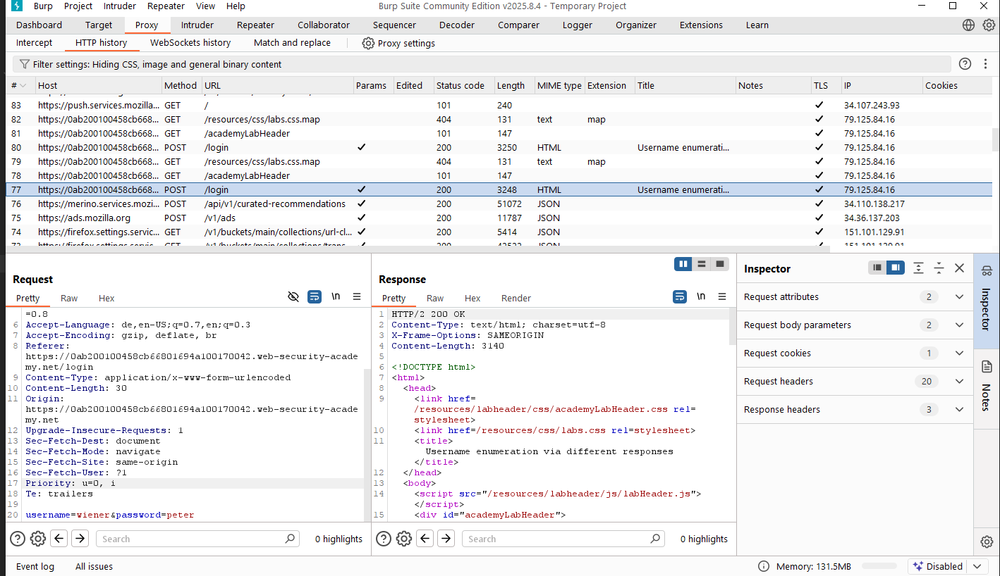
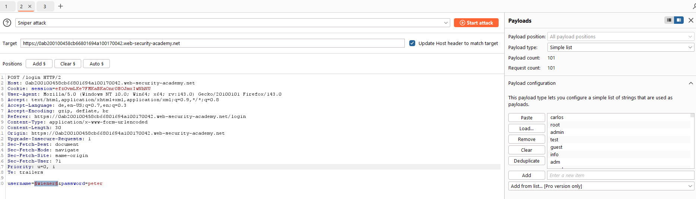
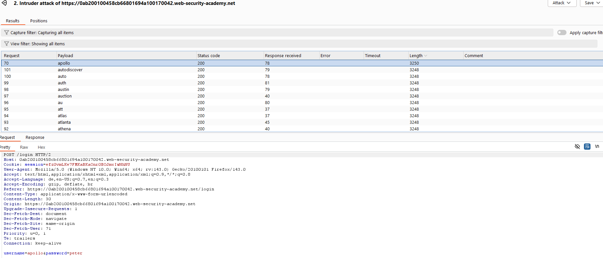
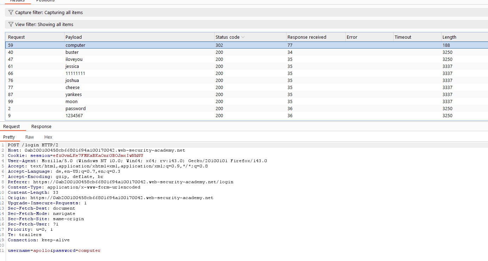

1. SF Authentication
Allgemein¶
Authentication ist ein Prozess der User bzw. Clients identifiziert und ggf. unterschiedliche Rechte auf Webseiten verteilt, weil Webseiten in erster Linie erstmal öffentlich für das ganze Internet ist. Deswegen sind robuste Authentication-Mechanismen essenziell für Web-Security.
Es gibt 3 verschiedene Haupttypen - Etwas was man weiß z. B: Passwort - Etwas was man hat z. B: Schlüssel - Etwas was man ist z. B: Fingerabdrücke, Gesichtserkennung oder Verhaltensweisen
Authentication: Prozess um von jemandem die Identität zu bestätigen Authorization: Welche Art von Rechte hat der User
Wie entstehen vulnerabilities beim authentifizieren¶
- Zu Schwache Mechanismen und nicht gegen Brute-Force gesichert
- Schlechte Implementierung sodass der Hacker das einfach bypassen kann (Broken Authentication)
Brute-Force¶
Verschiedene Passwort/Username Kombinationen durch Trial und Error mit einem Algorithmus durchlaufen lassen.
gezielteres Brute-Force¶
Bei einem gezielterem Brute-Force werden gewisse Passwortlisten genommen oder wahrscheinlichere Kombinationen verwendet.
Außerdem muss man auf diverse Dinge achten die ggf. Auskunft über zB: korrekte Usernamen geben durch: - Status Code: Während einer Brute-Force attacke ist es wichtig immer die selbe Fehlermeldung zu liefern also ob Username nun richtig oder falsch ist sonst kann ein unterschiedlicher Status-Code Auskunft darüber liefern ob der Username in der Datenbank auftaucht oder nicht. - Error messages: Manchmal könnten auch Error Messages unterschiedliche Ausgaben liefern zB: "Username ist falsch" oder "Username und Passwort sind falsch" oder "Passwort ist falsch" - Response Time: Je nachdem ob ein Username korrekt ist braucht das System länger weil es nach dem zugehörigen Passwort sucht was eine längere response-time bedeuten könnte wodurch sich auch erahnen lässt ob ein Username richtig oder falsch ist
🖥️🧪Lab: Username enumeration via different responses¶
- Suche nach POST /login request.
- An Intruder senden, Passwortliste einfügen und start Attack
- Length unterschiedlich -> Username vermutlich korrekt
- Dann das gleiche mit Passwort und dem gefundenen Usernamen wiederholen. -> Statuscode 302
{kind=link}
{kind=link}
{kind=link}
{kind=link}
🖥️🧪Lab: Username enumeration via subtly different responses¶
Ziel:
Analyse der Login-Funktion, um Unterschiede bei falschen und korrekten Eingaben zu erkennen und anschließend einen erfolgreichen Brute-Force Angriff durchzuführen.
Vorgehen:
-
Erste Tests im Intruder:
- Alle Responses hatten Status Code
200. - Die Response Length war zwar unterschiedlich, der Unterschied entstand jedoch nur durch ein eingebundenes Analytics-Script → kein valider Indikator.
- Alle Responses hatten Status Code
-
Vergleich der Fehlermeldungen:
- Verschiedene Keywords getestet (Grep Match).
- Mit komplett falschen Usernamen (
asd7127371231b2n178z) Response im Repeater überprüft. - Unterschied entdeckt:
- Ungültiger Username → Fehlermeldung: “Invalid username and password.”
- Gültiger Username, falsches Passwort → Fehlermeldung fast gleich, aber ohne Punkt am Ende.
- Damit konnte ein valider Benutzername identifiziert werden.
-
Brute Force Passwort-Test:
- Den ermittelten gültigen Benutzernamen mit einer Passwortliste im Intruder getestet.
- Nach Auswertung der Responses → Login erfolgreich → Zugang erhalten.
Ergebnis:
Die Login-Funktion ist anfällig für Username Enumeration (durch subtile Unterschiede in den Fehlermeldungen) und erlaubt anschließend einen erfolgreichen Brute-Force Angriff auf das Passwort.
🖥️🧪 LAB: Authentication – Username Enumeration & IP-Blocker Bypass¶
Ziel:
Analyse der Login-Funktion hinsichtlich Brute-Force-Absicherung, Username Enumeration und möglichen Bypass-Mechanismen.
-
Erste Beobachtungen
- Bei einem korrekten Benutzernamen und einem absichtlich langen Passwort dauert die Antwort des Servers signifikant länger.
- Bei einem falschen Benutzernamen erfolgt die Antwort dagegen sehr schnell.
→ Dadurch lässt sich eine Username Enumeration über Response Time durchführen.
-
IP-Blocker
- Nach ca. 3 fehlgeschlagenen Login-Versuchen wurde die Client-IP blockiert.
- Durch Tests festgestellt: Ein einfacher
X-Forwarded-For-Header reicht aus, um die Sperre zu umgehen. - Das System vertraut offenbar den übergebenen Headern und wertet diese für die IP-Erkennung aus.
-
Vorgehen mit Burp Intruder
-
Payload Setup:
- Benutzername: Liste mit potentiellen Usernamen.
- Passwort: Konstant ein langes Passwort, um Response Time-Unterschiede deutlicher zu machen.
- X-Forwarded-For: Als zweiter Payload-Parameter → IP-Adresse dynamisch hochzählen (z. B.
1.1.1.§1§).
-
Angriff:
-
Intruder-Attacke gestartet mit 2 Positionen:
- Benutzername → arbeitet die Liste durch.
- X-Forwarded-For → erhöht bei jedem Versuch die letzte IP-Ziffer.
-
Ergebnis:
- Der korrekte Benutzername konnte eindeutig identifiziert werden, da die Response Time deutlich höher war als bei allen anderen Requests.
-
-
-
Passwort Brute Force:
- Danach denselben Ansatz mit dem bekannten, validen Benutzernamen.
- Passwortliste abgearbeitet, X-Forwarded-For weiter rotiert, um Sperre zu umgehen.
- Ergebnis: Login erfolgreich.
-
Ergebnis
- Die Anwendung ist anfällig für:
- Username Enumeration via Response Time.
- Brute Force trotz IP-Blocker, da
X-Forwarded-Formanipuliert werden kann.
- Die Anwendung ist anfällig für:
Ziel:
Analyse der Login-Schutzmechanismen, insbesondere der IP-Blockierung bei fehlerhaften Versuchen und deren mögliche Umgehung.
Lab: Broken brute-force protection, IP block¶
-
Erste Beobachtungen
- Die Login-Funktion blockiert eine IP-Adresse nach 3 fehlgeschlagenen Versuchen.
- Anders als in der Variante mit
X-Forwarded-Forkonnten wir diesmal feststellen:
Ein erfolgreicher Login (z. B. mit einem bekannten gültigen Account) setzt die IP-Blockliste zurück. - Damit ist es möglich, den Brute-Force-Schutz durch periodische „Reset-Logins“ auszuhebeln.
-
Vorgehen
-
Analyse mit Burp Repeater:
- Mehrfach falsche Passwörter gesendet → Blockierung nach 3 Versuchen bestätigt.
- Danach mit gültigem Account („wiener:peter“) eingeloggt → Blockierung sofort aufgehoben.
-
Strategie für Brute Force:
- Wir haben eine Passwortliste für den Zieluser „carlos“ vorbereitet.
- In regelmäßigen Abständen nach jeweils 3 Versuchen wurde ein zusätzlicher Login mit „wiener:peter“ eingestreut, um die Blockierung zurückzusetzen.
- Dadurch konnten die Brute-Force-Versuche ohne Unterbrechung fortgesetzt werden.
-
Umsetzung:
- Zwei Payload-Sets im Intruder:
- Benutzername: Hauptsächlich „carlos“, alle 3 Versuche ergänzt durch „wiener“.
- Passwort: Aus Passwortliste, alle 3 Versuche ergänzt durch „peter“.
- Ergebnis: Der IP-Blocker griff nicht mehr, da jede Blockade durch den gültigen Login sofort zurückgesetzt wurde.
- Der korrekte Benutzername und anschließend das Passwort konnten so gefunden werden.
- Zwei Payload-Sets im Intruder:
-
-
Ergebnis
- Die Anwendung ist anfällig für Brute Force trotz IP-Blocker, weil ein erfolgreicher Login die Blockliste sofort löscht.
- Der Schutzmechanismus ist dadurch wirkungslos, sobald Angreifer Zugang zu irgendeinem gültigen Account haben.
Account Locking¶
Grundidee:
Webseiten sperren Accounts nach einer bestimmten Anzahl fehlgeschlagener Login-Versuche, um Brute-Force-Angriffe zu erschweren.
Vorteile - Schützt bedingt vor Brute-Force-Angriffen auf ein bestimmtes Konto, da dieses nach wenigen Fehlversuchen gesperrt wird.
Schwächen / Umgehungsmöglichkeiten 1. Username Enumeration - Wenn der Server bei gesperrten Accounts andere Fehlermeldungen zurückgibt, können Angreifer dadurch gültige Usernamen erkennen.
-
Brute Force gegen viele Accounts
- Schutz greift nur bei Angriffen auf ein einzelnes Konto.
- Angreifer können mehrere Accounts parallel angreifen, solange sie das Limit pro Account nicht überschreiten.
- Beispiel:
- Max. 3 Versuche erlaubt → Angreifer probiert pro User 3 Standard-Passwörter.
- Es reicht, wenn ein User tatsächlich eines dieser Passwörter nutzt → Account kompromittiert.
-
Credential Stuffing
- Bei Credential Stuffing werden echte, gestohlene Zugangsdaten (aus Leaks) massenhaft ausprobiert.
- Da pro Account nur ein Login-Versuch nötig ist, greift Account Locking hier nicht.
- Besonders gefährlich, weil viele Nutzer ihre Passwörter auf mehreren Webseiten wiederverwenden → Angreifer können so gleich mehrere Accounts übernehmen.
User Rate Limiting¶
Ansatz:
Eine weitere Möglichkeit, Brute-Force-Angriffe zu verhindern, ist Rate Limiting pro Benutzer/IP.
- Wenn zu viele Login-Versuche in kurzer Zeit von derselben IP ausgehen, wird diese IP blockiert.
- Die Entsperrung kann erfolgen:
- automatisch nach einer bestimmten Zeit,
- manuell durch einen Administrator,
- manuell durch den Benutzer (z. B. per CAPTCHA).
Vorteil gegenüber Account Locking: - Weniger anfällig für Username Enumeration und DoS-Angriffe.
Schwächen: - Angreifer können ihre scheinbare IP manipulieren (z. B. per Proxy oder Header-Manipulation), um die Sperre zu umgehen. - In manchen Fällen lässt sich die Sperre auch aushebeln, indem mehrere Passwortversuche in einer einzigen HTTP-Anfrage kombiniert werden.
Schwachstellen bei Multi-Faktor-Authentifizierung (MFA)¶
Viele Websites nutzen noch reine Single-Factor Authentifizierung (Passwort). Immer häufiger wird aber Zwei-Faktor-Authentifizierung (2FA) eingesetzt, bei der Nutzer etwas wissen (Passwort) und etwas besitzen (z. B. Code vom Gerät).
Vorteile von 2FA¶
- Angreifer können evtl. ein Passwort stehlen.
- Gleichzeitig an den zweiten Faktor zu kommen, ist deutlich schwerer.
- Darum ist 2FA grundsätzlich sicherer als reines Passwort-Login.
Probleme & Schwachstellen¶
-
Schlechte Implementierung
- 2FA ist nur so sicher wie die Umsetzung.
- Fehler können dazu führen, dass man 2FA umgehen oder ganz überspringen kann.
-
Gleicher Faktor doppelt geprüft
- E-Mail-basierte 2FA gilt nicht als echte Zwei-Faktor-Authentifizierung.
- Der Nutzer gibt Passwort ein und erhält Code per Mail → beide hängen vom Wissen des E-Mail-Passworts ab.
- Ergebnis: Es wird nicht wirklich ein zweiter Faktor geprüft.
-
Token-Methoden
- Sicherer: Dedizierte Geräte (RSA-Token, Keypads) oder Apps wie Google Authenticator → Code wird lokal auf dem Gerät generiert.
- Unsicherer: SMS-Codes → können abgefangen werden (z. B. durch Angriffe auf das Mobilfunknetz).
- Risiko: SIM-Swapping → Angreifer übernimmt Rufnummer, erhält alle SMS inklusive 2FA-Codes.
-
Bypass-Szenarien
- Manche Websites setzen 2FA technisch falsch um:
- Zuerst Passwort-Eingabe, danach Code-Eingabe auf separater Seite.
- Nach Passwort-Eingabe gilt der Nutzer bereits als „eingeloggt“.
- Angreifer kann direkt auf geschützte Seiten zugreifen, ohne jemals den Code einzugeben.
- Manche Websites setzen 2FA technisch falsch um:
Lab: 2FA simple bypass¶
Oft wird eine 2FA abgefragt, aber letztlich gar nicht gegengecheckt. D. h wenn man sich einloggt mit dem Passwort kann es sein, dass ein einfaches droppen vom 2. Login den Zugang ermöglicht. So wie in der Lab Aufgabe
Lab: 2FA broken logic¶
Nachträglicher Bericht.
Man muss aufpassen, dass man nicht den 2FA brute-forcen kann. -> User ausloggen bei zu vielen fehlschlägen mit 2FA -> in der praxis aber oft sinnlos weil ein advancter Hacker auch diesen Prozess automatisieren kann mit Burp Makros